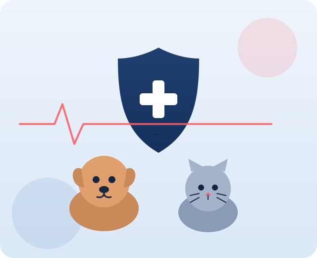

The Veterinary Emergency Clinic has cared for Toronto's pets around the clock since 1974 — emergency, critical care, and specialty services, working hand in hand with your primary veterinarian.

Every day and night of the year.
Nearly 50 years of emergency care.
College of Veterinarians of Ontario.
Featured on “Vets Saving Pets.”
You don't need a referral for an emergency — come straight in, any time.
Call us on your way so our team is ready. For life-threatening emergencies, come immediately.
Two Toronto locations with parking. Our emergency team is here 24 hours a day, every day.
We assess every patient by severity and keep you and your primary vet informed throughout.
Referral specialty services alongside 24-hour emergency and critical care.
Round-the-clock emergency and intensive critical care.
Soft-tissue and orthopedic surgery by board-certified surgeons.
Diagnosis and management of heart conditions.
Neurology and neurosurgery for complex cases.
Specialized care for eye conditions and injuries.
Diagnosis and treatment of complex internal illness.
Don't wait — call our emergency team or head to the nearest location. We're open and ready 24 hours a day.